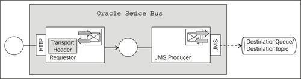
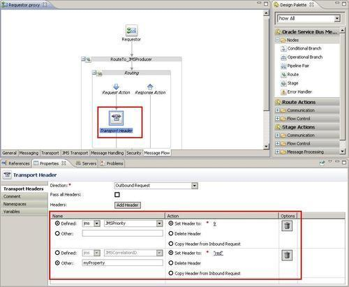
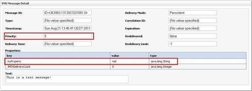

When sending a message to JMS queue or topic through a business service, default values for several JMS Transport message headers are used. The message headers as well as the message properties can be overwritten by using a Transport Header action in a proxy service when routing to the business service.
We will use it to both define the priority of the message by setting the JMSPriority header and to pass a user-defined property myProperty with the value red.
For this recipe, we will use the solution of the recipe Sending a message to a JMS queue and extend it with a simple pass-through proxy service and then add a Transport Header action.

You can import the base OSB project containing the solution from this previous recipe into Eclipse from \getting-ready\chapter-3\changing-jms-transport-headers-properties.
First we will add the pass-through proxy service which routes the message to the JMSProducer business service. In Eclipse OEPE, perform the following steps:
proxy folder in the changing-jms-transport-headers-properties OSB project.Now we can add the Transport Header to the message flow of the proxy service. We will use it to set the priority of the message to the highest possible value 9 and to pass a user-defined property "my-property" to the value of test.
In Eclipse OEPE, perform the following steps:
myProperty into the field next to the Other radio button.
Invoke the proxy service to see whether the JMSPriority header has been overwritten and the user-defined property has been added by the Transport Header action.
In the OSB console, perform the following steps.
This is a text message! into the Payload field and click Execute.Let's check the details of the message through the WebLogic console by performing the following steps:

We can see that both the header and the user-defined property have been set.
A business service using the JMS Transport defines the default values of the JMS message headers and properties. Some of these values, such as the JMSExpiration can be specified on the JMS Transport tab when configuring the business service. We have demonstrated that in the Sending a message to a JMS queue recipe. At runtime, these values can be overwritten before routing to the business service by using a Transport Header action. The Transport Header action can be placed into the Request Action of the Routing action or Publish action.